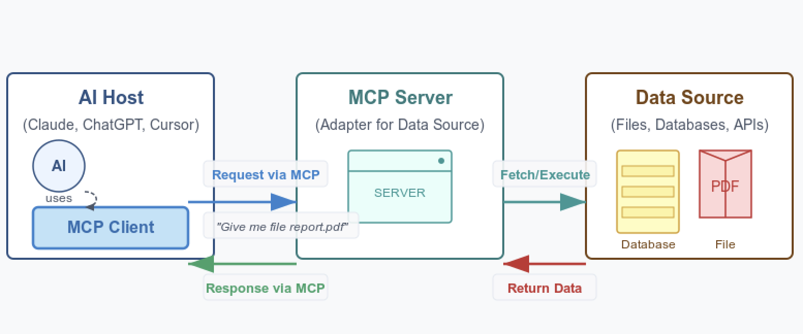

How MCP Works: A Simplified Flow

-
Initialization: The host app starts MCP clients, which perform a handshake with servers to exchange capabilities.
-
Discovery: The client requests the list of available Tools, Resources, and Prompts from the server.
-
Context Provision: The app displays Resources/Prompts to the user or makes Tools available to the LLM.
-
Invocation: The LLM decides to use a Tool and instructs the client to send an invocation request to the server.
-
Execution & Response: The server executes the logic (e.g., calls the GitHub API) and sends the result back to the client.
-
Completion: The client forwards the result to the LLM, which uses this new external information to generate its final response.